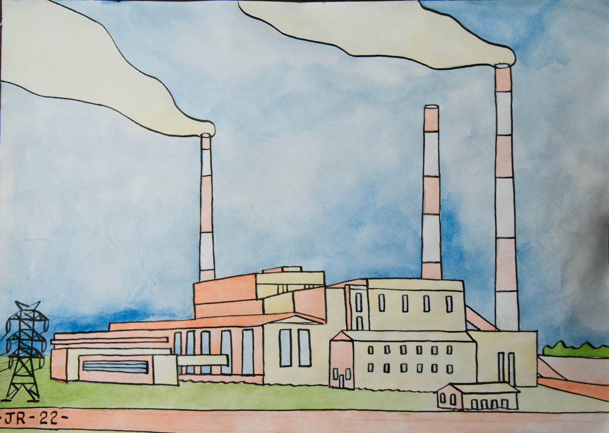

АРТ-ДОКУМЕНТАЦИЯ
Уличная фотография, несогласованный стрит-арт и холсты, зафиксированные в Питере. Каждая работа — это узел городской изнанки.


Уличная фотография, несогласованный стрит-арт и холсты, зафиксированные в Питере. Каждая работа — это узел городской изнанки.
